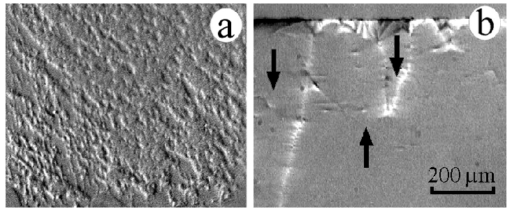

Figure 4:Domain structure in a polycrystalline NiO/NiFe bilayer (a) and in a NiFe film (b) grown on Si. The magnetic field is applied along the unidirectional and easy axes, respectively, that are parallel to the vertical frame of the MOIF pattern.
alchaiken@gmail.com (Alison Chaiken)